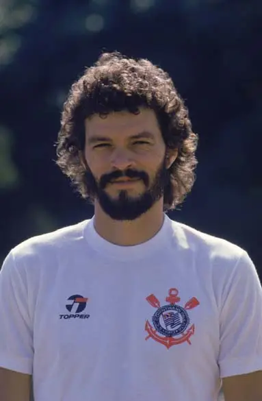
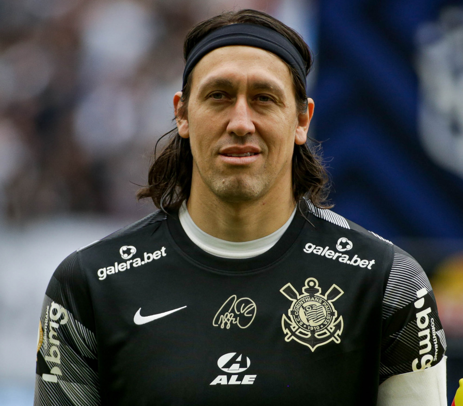
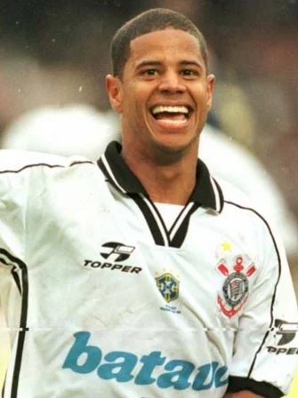
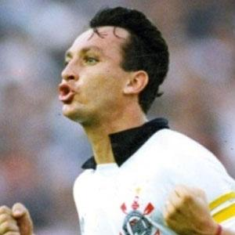
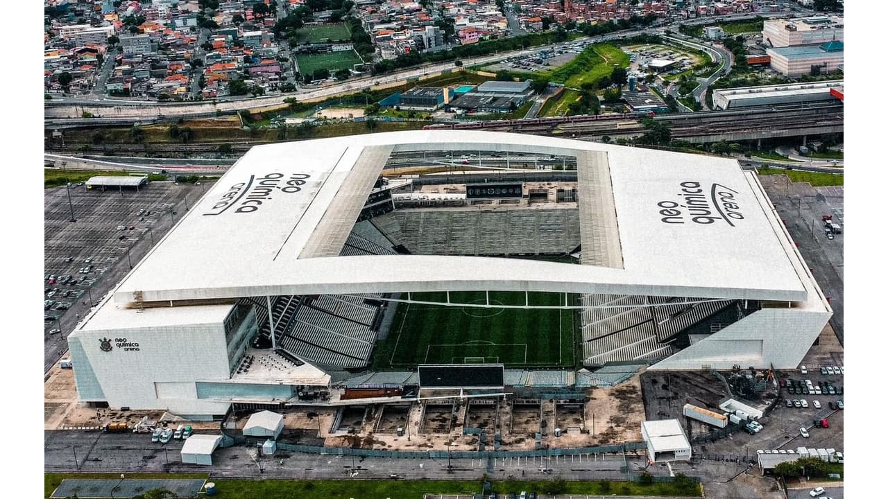
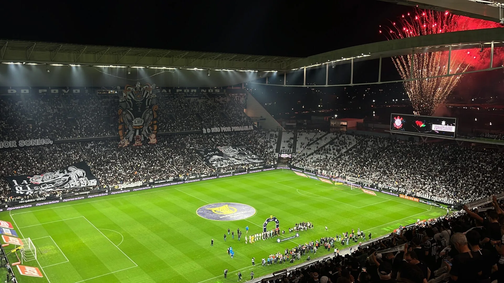
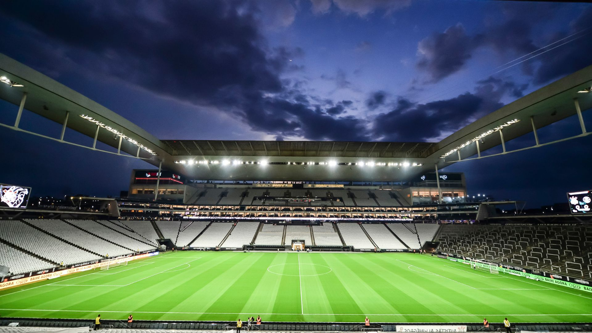

Sport Club Corinthians Paulista
O Time do Povo
O Time do Povo
O Sport Club Corinthians Paulista foi fundado em 1º de Setembro de 1910,na esquina das ruas José Paulino e Cônego Martins,pelos operáriosAnselmo Corrêa, Antônio Pereira, Carlos Silva,Joaquim Ambrósio e Raphael Perrone na cidade de São Paulo
(1978-1984)

(2012-2024)

(1994-2001)

(1989-1993) (1996-1997)

O Corinthians manda seus jogos na Neo Química Arena, localizada na cidade de São Paulo.
(Curiosidade:O estádio foi construído a exatamente 777 metros do nível do mar, número em homenagem a conquista do Campeonato Paulista em 1977, quebrando um jejum de mais de 22 anos sem cosquistar títulos )


